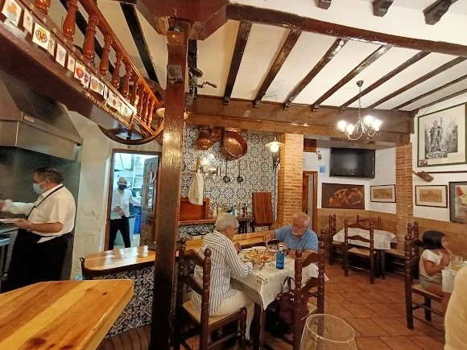
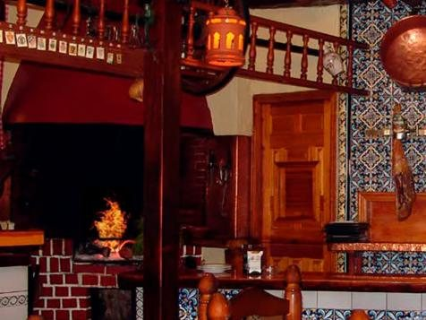
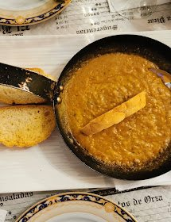

Cuenca · Cerro San Cristóbal
Brasa, leña
y cocina de aquí
Un mesón castellano de los de siempre: vigas de madera, carnes al fuego y los platos que se comen en Cuenca desde hace generaciones. Morteruelo, zarajos, pisto manchego y guisos de cuchara.
- 4,4
- sobre 2.571 reseñas
- 26 €
- precio medio por persona
- Brasa
- carnes al fuego de leña


La casa
Cocina manchega,
sin reinventar nada
El Bodegón es un mesón de techo con vigas vistas y madera por todas partes, en el Cerro San Cristóbal. Aquí no se busca la sorpresa: se busca que el morteruelo sepa a morteruelo y que la carne salga de la brasa en su punto.
Las raciones son de las de compartir y llenar la mesa, y el ticket medio ronda los 26 € por persona.
-
A la brasa
Solomillo de cerdo, chuletas de cordero y los zarajos, al fuego. -
Guisos de cuchara
Codillo y rabo de toro, de los que piden pan. -
Producto de la tierra
Morteruelo y pisto manchego, como se hacen en Cuenca.
La carta
Lo que sale
de la cocina
Una selección de los platos por los que más se nos conoce. La carta completa y las sugerencias del día están en el mesón.

Los fines de semana se llena: mejor llamar y reservar.
Opiniones
4,4 sobre 5
Sobre 2.571 reseñas. Lo que más se repite: raciones abundantes, buen precio y el ambiente de mesón de siempre.
4,4/5
2.571 reseñas
Visítanos
Cuándo y dónde
| Lunes | Cerrado |
|---|---|
| Martes | Cerrado |
| Miércoles | 12:00 – 16:30 · 19:00 – 23:00 |
| Jueves | 12:00 – 16:30 · 19:00 – 23:00 |
| Viernes | 12:00 – 16:30 · 19:00 – 23:00 |
| Sábado | 12:00 – 16:30 · 19:00 – 23:00 |
| Domingo | 12:00 – 16:30 · 19:00 – 23:00 |
Horario pendiente de confirmar con el local. Festivos y vísperas pueden cambiar.
Mesón El Bodegón Cerro San Cristóbal, 116004 Cuenca
¿Reservamos mesa?
Llámanos y te decimos disponibilidad al momento. Para grupos, mejor con un par de días.